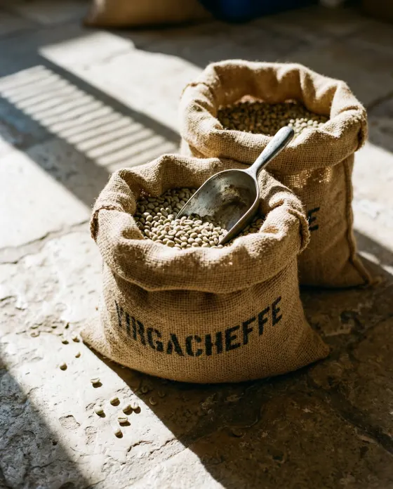
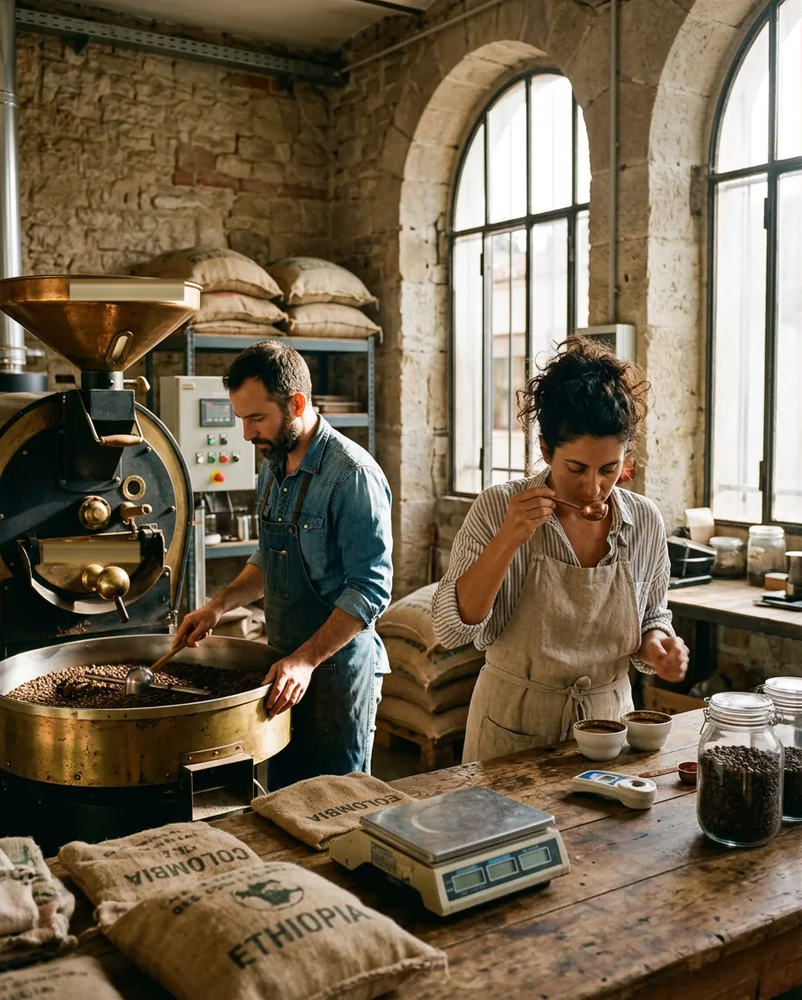
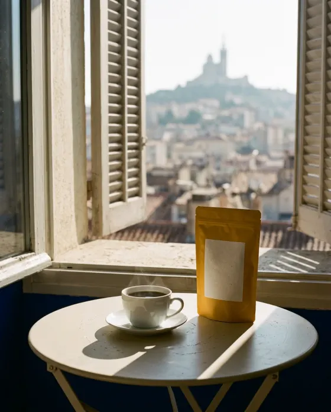

Torréfié mardi à Marseille. Dans votre tasse jeudi.
Café de spécialité de petites fermes, livré chez vous dès 12,50 € les 250 g.
ou acheter un sachet
Cueilli à la main, quand c'est rouge.
Quatre petites fermes, en Éthiopie, en Colombie, au Rwanda et au Brésil. On les connaît par leur nom.
Premier crac à 9 minutes


Emballé mardi. Chez vous jeudi.
Moulu pour votre cafetière, dans un sachet qui finit au compost.
La boutique
Du jasmin au cacao, quatre cafés de saison.
Chaque sachet porte sa date de torréfaction.
-

Éthiopie · lavé · 2 100 m
Konga
Jasmin, bergamote, pêche blanche.
13,90 € -

Colombie · honey · 1 800 m
El Mirador
Chocolat au lait, panela, pomme rouge.
13,90 € -

Rwanda · lavé · 1 900 m
Kanzu
Cassis, hibiscus, thé noir.
13,90 € -

Brésil · nature · 1 150 m
Boa Vista
Noisette, cacao, caramel.
12,90 € -

Pour goûter, ou offrir
Coffret découverte
Konga, El Mirador et Kanzu, 3 × 125 g.
24 €

L'abonnement
Le sachet suivant arrive avant la fin du premier.
Dès 12,50 € les 250 g, livrés.
- 1Choisissez un café, ou laissez-nous vous surprendre.
- 2On le torréfie mardi et on le moud pour votre cafetière.
- 3Il arrive jeudi, tous les 15 jours ou tous les mois. Pause en un clic.


Qui torréfie
Sofia et Karim goûtent chaque fournée avant de l'ensacher.
Dix ans de comptoir à Londres et Melbourne pour elle, un tambour de 15 kg pour lui. Ça sent bon jusqu'au boulevard.
27 rue Guibal, Belle de Mai · Dégustation le samedi à 11 h · Voir le plan (nouvel onglet)

Le jeudi matin, chez nos abonnés.
Le Kanzu, je l'attends le jeudi comme le journal.
Inès, MarseilleMon moka n'a jamais eu ce goût de fruit.
Thomas, LyonEn août, j'ai mis l'abonnement en pause en deux clics.
Camille, Paris
Le journal
De la ferme à votre cafetière, nos notes du mois.
Questions
Ce qu'on nous demande le samedi, au comptoir.

Je n'y connais rien. Je prends lequel ?
« Surprenez-moi » : un café différent à chaque envoi, avec une fiche qui explique ce que vous buvez.
En grains ou moulu ?
En grains si vous avez un moulin. Sinon, on moud le mardi pour votre cafetière.
Je pars en vacances ?
Mettez l'abonnement en pause avant le lundi soir : rien n'est envoyé, rien n'est prélevé.
Où livrez-vous, et combien ça coûte ?
Partout en France métropolitaine, en boîte aux lettres, en 48 h. Port offert pour les abonnements et dès 39 €, sinon 4,90 €.
Combien de temps se garde-t-il ?
Il est bon dès jeudi en filtre, et à son meilleur jusqu'à un mois. En espresso, attendez une semaine. La date est sur chaque sachet.

Jeudi, ça sentira le café chez vous.
Commandez avant lundi 23 h 59 : votre café part de la fournée du mardi.
- Sans engagement
- Pause en un clic
- Port offert en abonnement